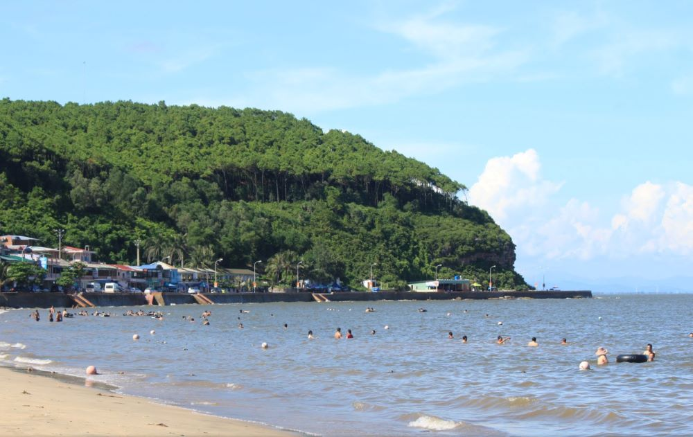
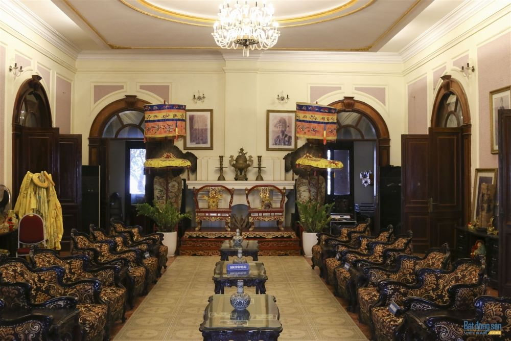
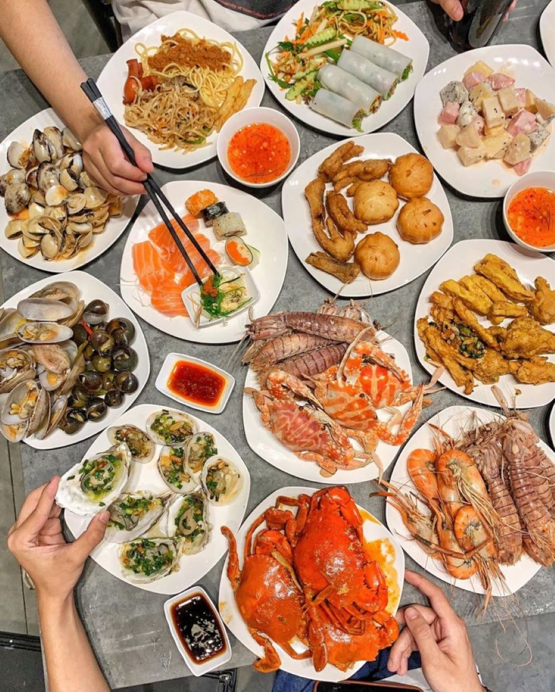

Hải Phòng – thành phố hoa phượng đỏ
Khám phá Bãi biển Đồ Sơn hot nhất vịnh Bắc Bộ trong mùa hè này
Bãi biển Đồ Sơn - cái tên không còn quá xa lạ đối với con dân “ghiền” biển, nhất là đối với khu vực phía Bắc. Với phong cảnh đẹp cùng mặt biển ít sóng lớn, bãi Đồ Sơn chưa bao giờ hạ nhiệt trong làng du lịch, cùng MIA.vn khám phá lý do vì sao biển Đồ Sơn vẫn luôn hot theo thời gian nhé!
1.Tổng quan về Đồ Sơn
Cách trung tâm thành phố Hải Phòng khoảng 20km và cách thủ đô Hà Nội khoảng 120km, Đồ Sơn được biết đến với tư cách là một quận của Hải Phòng cũng như là một bán bán đảo nhỏ hẹp dần khi vươn ra biển. Khác với những dải cát trắng của biển miền Trung, Bãi biển Đồ Sơn sở hữu nét đặc trưng của biển Bắc Bộ, đó là màu nước đục cùng cát nâu. Tuy nhiên, vì vị trí gần Hà Nội nên biển Đồ Sơn vẫn luôn là điểm du lịch Hải Phòng lý tưởng của người dân Thủ Đô cũng như các tỉnh gần đó mỗi khi dịp hè đến.Cách trung tâm thành phố Hải Phòng khoảng 20km và cách thủ đô Hà Nội khoảng 120km, Đồ Sơn được biết đến với tư cách là một quận của Hải Phòng cũng như là một bán bán đảo nhỏ hẹp dần khi vươn ra biển. Khác với những dải cát trắng của biển miền Trung, Bãi biển Đồ Sơn sở hữu nét đặc trưng của biển Bắc Bộ, đó là màu nước đục cùng cát nâu. Tuy nhiên, vì vị trí gần Hà Nội nên biển Đồ Sơn vẫn luôn là điểm du lịch Hải Phòng lý tưởng của người dân Thủ Đô cũng như các tỉnh gần đó mỗi khi dịp hè đến.
2.Thời điểm thích hợp để khám phá Bãi biển Đồ Sơn
Bãi biển Đồ Sơn luôn chào đón bạn ở bất kỳ thời điểm nào trong năm. Tuy nhiên, bạn nên đến vào đầu năm và mùa hè để tận hưởng trọn vẹn nhất không khí nơi đây.
Ngoài biển Đồ Sơn, bạn có thể tham gia vào một số lễ hội truyền thống để khám phá thêm về văn hóa nơi đây như viếng đền Bà Đế, lễ hội đảo Dấu,…
3.Từ Hà Nội đến Bãi biển Đồ Sơn bằng cách nào?
3.1Dùng phương tiện cá nhân
Bạn có thể đến biển Đồ Sơn bằng phương tiện cá nhân của mình để có thể khám phá được nhiều hơn và chủ động thời gian hơn. Cụ thể như sau:
Xe máy: di chuyển theo hướng QL5 đến Hải Phòng. Song, khá nguy hiểm vì có nhiều xe container lưu thông. Một cách khác để an toàn hơn, đó là di chuyển bằng tàu hỏa từ Hà Nội đến Hải Phòng (mua thêm vé chở xe máy) sau đó đi bằng xe máy để đến Bãi biển Đồ Sơn.
Ô tô: từ trung tâm thành phố bạn đi theo hướng cầu trắng trên cao, sau đó rẽ vào đường cao tốc Hà Nội – Hải Phòng. Khi đến địa phận thành phố Hải Phòng bạn di chuyển theo đường TL 353 sẽ đến được biển Đồ Sơn.
3.2Xe khách đến bãi biển Đồ Sơn
Tại các bến xe như Mỹ Đình, Giáp Bát, Lương Yên, có các hãng Xe khách Hà Nội - Hải Phòng uy tín, chất lượng... Thời gian di chuyển khoảng 2 đến 3 tiếng và tùy loại xe mà giá vé có thể dao động từ 70 đến 200.000đ. Dưới đây là một số hãng xe mà bạn có thể tham khảo:
Limousine Hải Phòng Travel
Đón khách tại: 45 Nguyễn Quốc Trị, Hà Nội
Điểm trả khách: số 61 Phạm Văn Đồng, Hải Phòng
Giá vé: 200.000đ/lượt
Hãng xe Hải Âu:
Đón khách tại: bến xe Gia Lâm hoặc bến xe Nước Ngầm
Điểm trả khách: bến xe Thượng Lý, bến xe Niệm Nghĩa hoặc Vĩnh Niệm
Giá vé: 100.000đ/lượt
Hãng xe Hoàng Long:
Đón khách tại: bến xe Nước Ngầm
Điểm trả khách: nội thành Hải Phòng
Giá vé: 120.000đ/lượt
3.3Dùng tàu hỏa
Từ ga Hà Nội, ga Long Biên hoặc ga Gia Lâm ( nếu các bạn muốn mang xe máy thì nên đi ga Gia Lâm) đi đến Bãi biển Đồ Sơn mất gần 3 tiếng đồng hồ. Các bạn có thể mua vé trực tiếp tại quầy hoặc mua online trên web của ga, các chuyến tàu tới Hải Phòng trong ngày chạy lúc 6h, 9h17, 15h20 và 18h15. Giá vé tàu khá rẻ chỉ từ 52-85k/lượt tùy loại ghế. Tới Hải Phòng các bạn có thể di chuyển bằng taxi hoặc xe bus tới biển Đồ Sơn.
4.Ở Đồ Sơn chơi gì?
4.1 Tắm biển ở Đồ Sơn
Bãi biển Đồ Sơn nổi danh từ lâu, vì vậy đến đây mà không tắm biển thì thật là một trải nghiệm không trọn vẹn. Bãi biển Đồ Sơn được phân làm 3 khu chính:
Khu 1: Thường tập trung nhiều quán ăn, tuy vậy vì vị thế có nhiều bãi đá và sóng to nên sẽ rất nguy hiểm khi tắm
Khu 2: là bãi tắm thường xuyên của du khách nên khá đông đúc.
Ngược lại với khu 2, khu 3 cách xa trung tâm nên khá vắng vẻ và ít dịch vụ

4.2 Check in ngập tràn tại khu du lịch Hòn Dấu
Ngoài phong cảnh thiên nhiên thơ mộng, Đảo Hòn Dấu còn sở hữu cho mình khu du lịch cực hoành tráng sở hữu bể bơi nhân tạo lớn nhất Châu Á. Bên cạnh đó khu du lịch Hòn Dấu còn có vườn thú, vườn chim và các khu vui chơi hấp dẫn khác.
Nếu bạn không thích quá ồn ào, bạn cũng có thể tự tham quan Hòn Dấu, check in cùng bãi đá, hoàng hôn hay ngọn hải đăng đã hơn trăm tuổi ở đây.
4.3 Tham quan sòng bạc Casino Đồ Sơn
Đến với Bãi biển Đồ Sơn, bạn có thể tham quan một trong những sòng bạc lớn nhất châu Á. Cùng thưởng thức công trình hoành tráng, xem những ván bài hấp dẫn tại nơi đây. Tuy nhiên lưu ý rằng chỉ có người nước ngoài được chơi thôi nhé!
4.4 Khám phá di tích Dinh Vua Bảo Đại Hải Phòng
Công trình này được toàn quyền Đông Dương Pafquiere tặng vua Bảo Đại làm nơi nghỉ dưỡng sau khi vua trở về từ Pháp năm 1932. Với lối kiến trúc đậm chất cổ điển Pháp cùng diện tích rộng hướng ra Bãi biển Đồ Sơn, đây được xem là một trong số ít những công trình dinh vua Bảo Đại vẫn còn nguyên vẹn.

5.Thiên đường hải sản quên lối tại biển Đồ Sơn
Cẩm nang du lịch của bạn sẽ thiếu mất một trang khi không thưởng thức hải sản tại Bãi biển Đồ Sơn. Đặc biệt tại khu 2 biển Đồ Sơn có các quán ăn, nhà hàng hải sản ven biển để bạn có thể lựa chọn, nào là bề bề, cá mực, tôm,…
Ngoài hải sản Đồ Sơn, bạn cũng có thể thưởng thức thêm một số món đặc sản nơi đây như Bánh đa cua Hải Phòng, bánh cuốn nhân tôm, Nem cua bể Hải Phòng,….hoặc cũng có thể mang về những sản vật trứ danh như mắm chắt Bàng La, giò nghé,..

Tuy thuộc hàng “lão làng” trong làng du lịch biển, vậy nhưng Bãi biển Đồ Sơn vẫn mang trong mình những sức hút riêng. Đến với bãi biển Đồ Sơn, vừa được thỏa mình trong làn nước mát, vừa được thưởng thức đặc sản trứ danh, lại vừa khám phá cảnh đẹp, còn gì tuyệt vời hơn thế nữa? Xách ba lô lên và trải nghiệm ngay thôi.